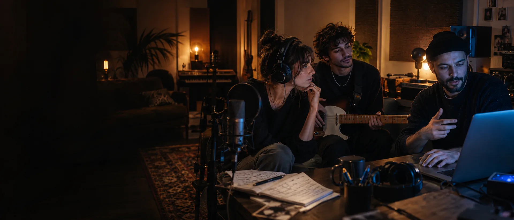

<template id="scene-03-template">
  <div data-composition-id="scene-03" data-width="1920" data-height="1080" class="scene scene--collab">
    
    <div class="scene-content">
      <div class="scene-head">
        <p class="scene-label">02 — Créer et écouter</p>
        <h2 class="scene-title">Créer, c’est aussi<br />reprendre<span class="blue-period">.</span></h2>
        <div class="scene-rule"></div>
        <p class="scene-copy">Essais, paroles et retours : le chemin du morceau.</p>
      </div>
      <div class="scene-meta"><span>PLUSIEURS REGARDS, UNE DIRECTION D’ARTISTE</span><span>03 / 05</span></div>
    </div>
    <script>
      window.__timelines = window.__timelines || {};
      const tl = gsap.timeline({ paused: true });
      tl.from("[data-composition-id='scene-03'] .scene-label", { opacity: 0, x: 24, duration: 0.35, ease: "back.out(1.1)" }, 0.08);
      tl.from("[data-composition-id='scene-03'] .scene-title", { opacity: 0, y: 49, duration: 0.62, ease: "power3.out" }, 0.2);
      tl.from("[data-composition-id='scene-03'] .scene-rule", { scaleX: 0, duration: 0.5, ease: "expo.out" }, 0.57);
      tl.from("[data-composition-id='scene-03'] .scene-copy", { opacity: 0, x: -27, duration: 0.52, ease: "power2.out" }, 0.65);
      tl.from("[data-composition-id='scene-03'] .scene-meta", { opacity: 0, y: 17, duration: 0.38, ease: "sine.out" }, 1.03);
      tl.fromTo("[data-composition-id='scene-03'] .scene-photo", { scale: 1.025 }, { scale: 1.055, duration: 3.9, ease: "none" }, 0);
      window.__timelines["scene-03"] = tl;
    </script>
  </div>
</template>
